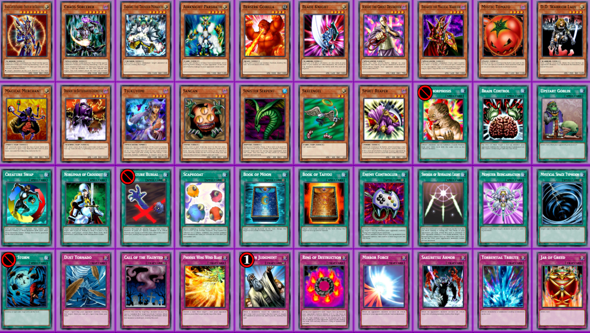
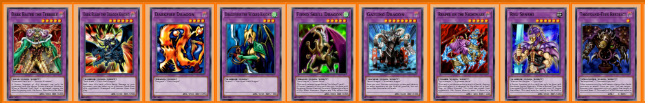

A Symmetrical Skill-First Yu-Gi-Oh! Format · Singleton · Mirror · No Deckbuilding
Two players. One shared deck. No deckbuilding. No matchups. Just decisions. Chess Goat is the closest Yu-Gi-Oh gets to chess — and this is the proxy set that makes it real.

Main Deck — 40 Cards — 17 Monsters / 14 Spells / 9 Traps
01 — Concept
Chess Goat is a custom-designed mirror format built on the bones of Goat Format (circa 2005). It is not a trading card game. There is no deckbuilding, no card acquisition, no cycling content. It is a closed competitive system — one shared 40-card singleton deck that both players draw from simultaneously.
The closest analogy is chess. Identical starting forces. No matchup variance. Outcome determined entirely by how well you play the game state in front of you.
Goat Format was chosen as the base layer for a reason: its slower pace rewards resource management over raw power, its card text is simple enough that new players can get moving immediately, and its hidden-information trap layer creates a bluffing dimension that pure board games lack. Chess Goat takes that foundation and strips out every source of high-impact variance — leaving a format where skill accumulates over time, not explodes in a single draw.
02 — Why
Standard Yu-Gi-Oh is rock-paper-scissors with optimization. Two good players with a bad matchup can't produce a fair game. That's fine for tournaments — terrible for a casual showdown where you want to actually find out who the better player is.
Chess Goat eliminates all of that. No matchups exist. No archetype advantage. No "I would've won if I'd drawn my out." Every variable the format controls is gone. What remains is the one variable that can't be equalized: decision quality.
The proxy set exists because this format deserves a physical presence. Sitting across from someone and playing it on paper, with real cards shuffled into a real 40-card stack, hits differently than any digital sim.
03 — Decklist
40 cards. Singleton throughout. Every card earns its slot through a defined functional role — not raw power, not nostalgia. The deck is a system. Understanding the system is more important than knowing individual card ratings.
S Tier — Game-Defining
A Tier — High Impact
B Tier — Strong Utility
C Tier — Structural Glue
04 — Extra Deck

Extra Deck — 9 Fusion Monsters — All accessed via Metamorphosis
The Extra Deck is not an afterthought. It's a strategic sub-system. Every monster in the main deck has a fusion counterpart — Metamorphosis turns this into a constant sub-game of which monster to tribute, which fusion to access, and whether the tempo cost is worth it.
You never have to touch the Extra Deck. Ignoring it completely is a valid play pattern. But ignoring it means surrendering depth — and in a skill-first format, that matters.
Thousand-Eyes Restrict
0 ATK / 0 DEF — Level 1
Freezes all monsters. Absorbs one opponent monster. The apex fusion. Access via Scapegoat token — the highest-ceiling line in the format.
Dark Balter the Terrible
2000 ATK / 800 DEF — Level 4
Negates spell and trap activations. Shuts off the entire back row while alive. Access via Berserk Gorilla.
Ryu Senshi
2000 ATK / 800 DEF — Level 4
Negates trap activations. Combat-focused countermeasure. Punches through trap-heavy boards.
Reaper on the Nightmare
800 ATK / 3000 DEF — Level 3
Indestructible by battle. Discards from opponent's hand on attack. Pure control upgrade via Spirit Reaper tribute.
Fiend Skull Dragon
2000 ATK / 1000 DEF — Level 4
Immune to effect damage and trap cards. Clean, uninterruptible attack pressure.
Gatling Dragon
2600 ATK / 1200 DEF — Level 4
Flip coins to destroy monsters. Highest ATK in the Extra Deck. Risk/reward removal — can clear everything or nothing.
Dragoness the Wicked Knight
1700 ATK / 1500 DEF — Level 3
Destroys a Spell/Trap when it destroys a monster in battle. Aggressive back-row clearance.
Dark Blade the Dragon Knight
2200 ATK / 1500 DEF — Level 4
Immune to spell effects. Niche but powerful when spells dominate the game state.
Darkfire Dragon
1500 ATK / 1250 DEF — Level 4
The bridge fusion. Lower ceiling but accessible when stronger options aren't optimal.
05 — Gameplay
Games move in three phases. The opening (turns 1–4) is about gathering information and building structure — set flip monsters, establish face-down presence, don't overcommit. The midgame (turns 5–10) is where games are actually decided — boards are active, resources are flowing, and every decision has weight. Late game is a tight resource war. Hand sizes shrink. Card tracking becomes decisive.
No single play wins the game. Position accumulates. The player who makes consistently better decisions across 15 turns wins — not the player who opened best.
Three win paths exist simultaneously: sustained life point pressure, resource exhaustion (opponent runs out of answers), and deck-out in ultra-long games. Advanced players keep all three in view at once.
The Tsukuyomi Loop
Tsukuyomi returns to hand at end of turn. Summon it again next turn, reset a flip monster face-down, trigger their effect again on attack or with Book of Taiyou. Repeated draw advantage over multiple turns — the format's central incremental engine.
Scapegoat → Metamorphosis → Thousand-Eyes Restrict
Activate Scapegoat on opponent's end phase. Your main phase: Metamorphosis tributes a Level 1 token → TER. All monsters freeze. One opponent monster gets absorbed. Three tokens still block. The highest-ceiling single turn available.
Sinister Serpent Discard Engine
Serpent returns to hand each standby phase after being discarded. Feeds Phoenix Wing Wind Blast and Monster Reincarnation at zero long-term cost. A persistent outlet that makes two cards effectively free.
Mystic Tomato Search Network
On battle destruction, search any DARK monster with 1500 ATK or less. The choice of target is the skill expression: Sangan for toolbox access, Spirit Reaper for a wall, Tsukuyomi to reset the board, Sinister Serpent for discard fodder. Every Tomato trade is even on cards but uneven on value.
Creature Swap + Scapegoat Token
Trade a worthless sheep token for the opponent's best monster. Net +1 in quality with a card that was already generating free bodies. One of the cleanest punish lines in the format.
06 — Proxy Notes
49 Cards Total — 40 Main / 9 Extra
Singleton throughout — one copy of every card, no duplicates. This is also the only proxy set where the card art matters beyond aesthetics: since both players draw from the same physical deck, sleeves are required and the back of every card must be identical. Print on white cardstock, sleeve in matching opaques.
All 40 main deck cards and all 9 Extra Deck fusions need to be printed. The Extra Deck cards are accessed through Metamorphosis and sit face-down in the Extra Deck zone — they don't go into the main stack.
For the proxies: high-resolution card images sourced from YGOPRODECK or similar. Print at standard card size (63mm × 88mm). The purple border on the main deck visual above was added for the photo — actual print files use standard card-appropriate borders.
This format works best with two identical physical sets printed — one per player to reference during games, with the shared play deck shuffled between matches.